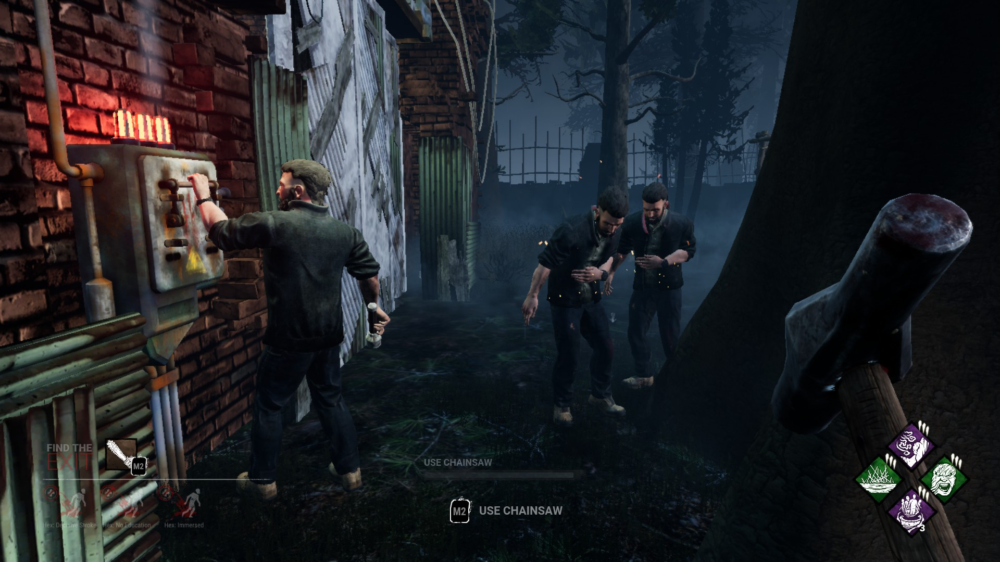

Особенности Dead by Daylight
Для Выживших: Борьба за Побег
Ремонт Генераторов
- Нужно отремонтировать 5 генераторов, чтобы активировать ворота выхода.
- Проверки навыков: ошибки привлекают убийцу и сбивают прогресс.
- Командная работа ускоряет, но повышает риск ошибок.
Лечение
- Можно лечить себя или других с помощью аптечек.
- Процесс лечения уязвим и может прерваться.
- Существуют перки, ускоряющие лечение и уменьшающие шум.
Погоня
- Используйте доски, окна и окружение для побега.
- Красная подсветка и звук подсказывают, что убийца рядом.
Использование Перков
- Перки дают разные преимущества: от повышения скорости до способности видеть ауру убийцы.
- Открываются в "Кровавой паутине" по мере прокачки.
- Выбор перков важен для стратегии команды.
Использование Предметов
- Аптечки, фонарики, инструменты, ключи и аддоны — каждый предмет уникален.
Для Убийц: Охота и Жертва
Погоня
- Убийцы следуют за выжившими с помощью звуковых подсказок, способностей и окружения.
Подвешивание на Крюки
- У выжившего три фазы на крюке: попытка побега, проверка навыков, смерть.
- Другие выжившие могут спасти товарища, рискуя собой.
Использование Перков
- Дают преимущества: ускорение, видимость аур, замедление ремонта и др.
Охрана Генераторов
- Убийцы патрулируют карту и пытаются прерывать ремонт.
Общие механики
Проверки навыков (Skill Checks)
- Внезапные мини‑игры, точный тайминг важен — ошибки приводят к штрафам.
Аура
- Некоторые перки позволяют видеть ауру других игроков и объектов.
Ворота

- Выжившие могут открыть ворота и сбежать, если отремонтировали все генераторы.
Люк
- Появляется, если остаётся один выживший — убийца может закрыть его.
Сущность
- Невидимая сила, контролирующая мир DBD и требующая жертв.